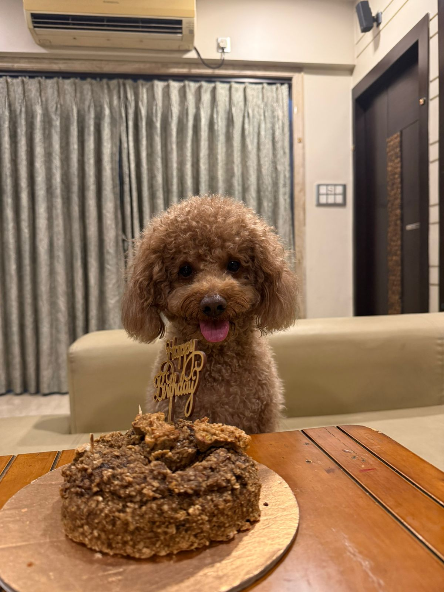

Portfolio
Class XI ISC Student - Curious learner, creative thinker, aspiring achiever.
About
Hi! I am Vidushi Agarwal, a Class XI ISC student with a love for learning and exploring new ideas. I believe in working hard, staying curious, and pushing my limits every single day.
Whether it is on the cricket field, at an MUN conference, or across a chess board - I bring focus, strategy, and enthusiasm to everything I do.
Education
Skills
Favourite Activities
A game of patience, precision, and teamwork. I love every moment on the field - from the toss to the final over.
Debating world issues, drafting resolutions, and stepping into the shoes of diplomats. MUN sharpens my voice and my mind.
64 squares of pure strategy. Chess teaches me to think ahead, stay calm, and find clarity in complexity.
Wind in my hair, freedom in every turn. Cycling is my favourite way to clear my head and just breathe.
From soft melodies to bold beats - the synth lets me turn feelings into sound. Music is my quiet superpower.

My Best Friend
The fluffiest, sweetest, most photogenic member of our family. Scotch is my little shadow - always by my side, always ready with a wagging tail and a head tilt that melts every heart in the room.
He has this funny habit of throwing the blanket off my bed onto the floor - every single time. But what makes him truly special is how deeply he understands me and my family. Without a single word, he just knows.
"A friend with fur is a friend forever."
Fun Facts About Scotch
Feel free to reach out!